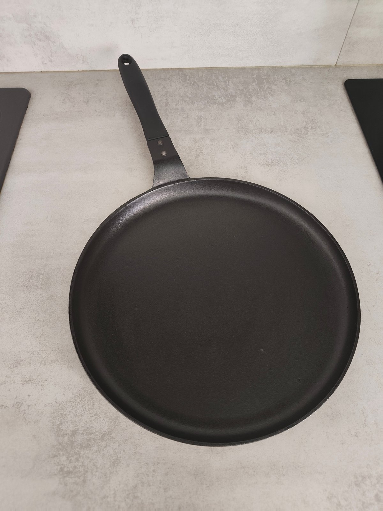
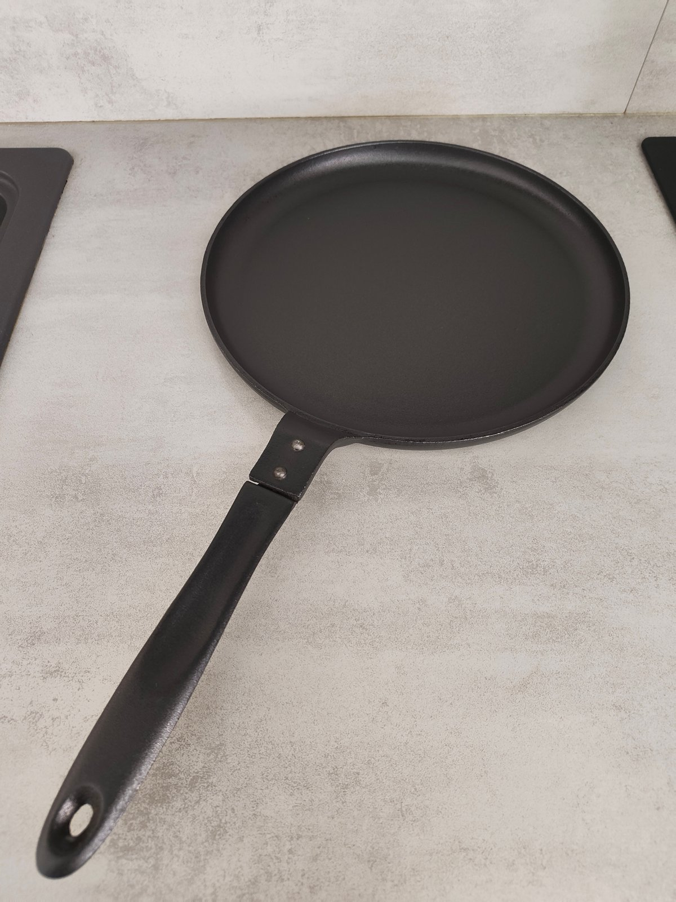
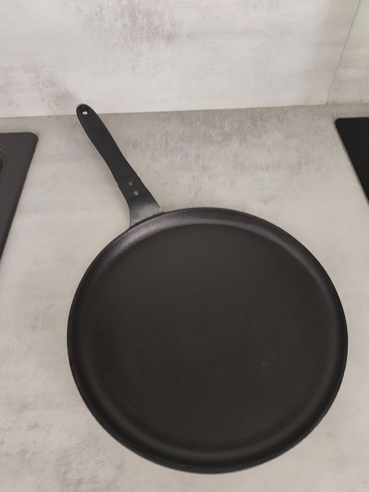

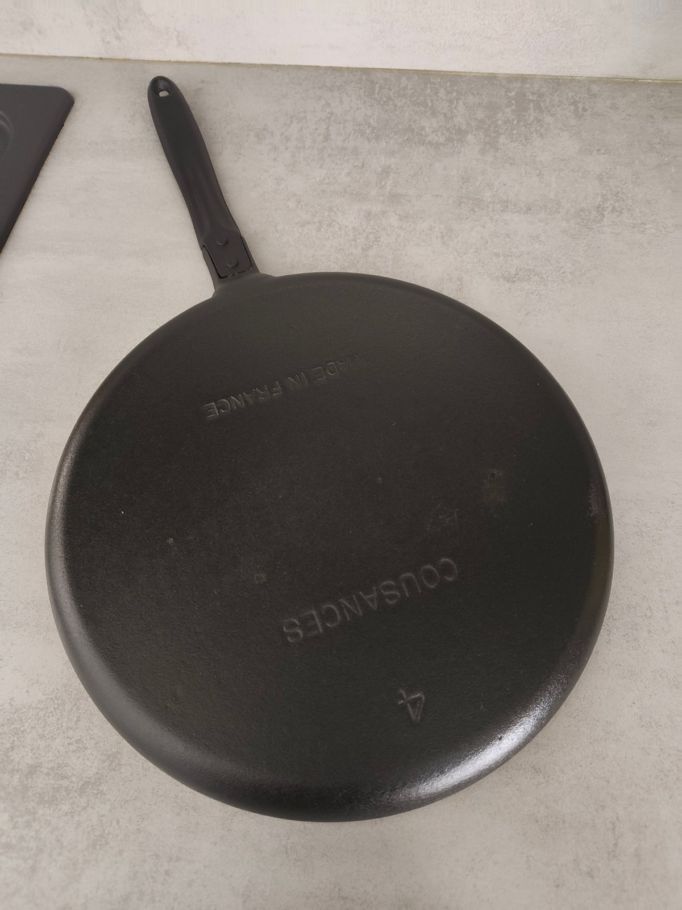
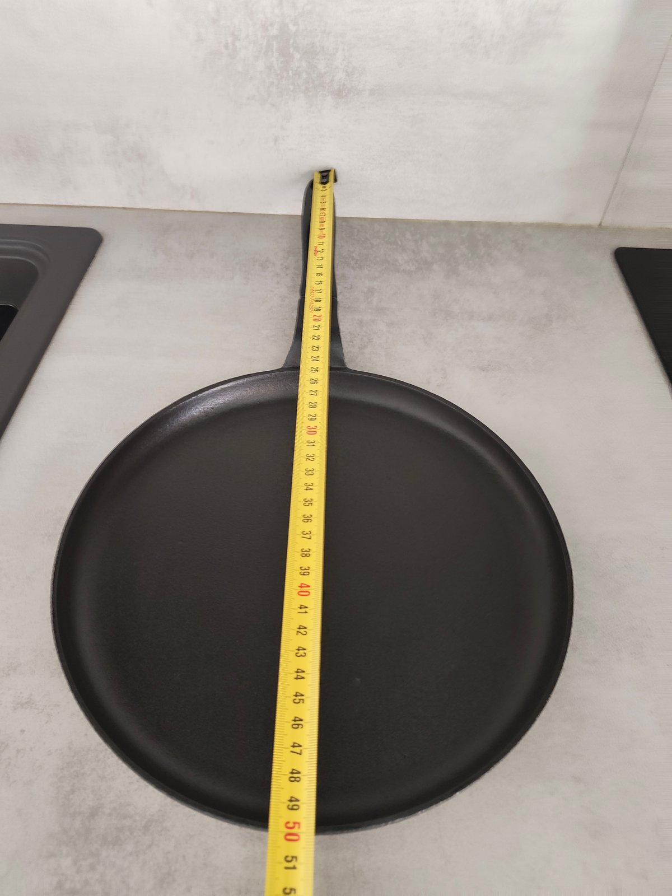
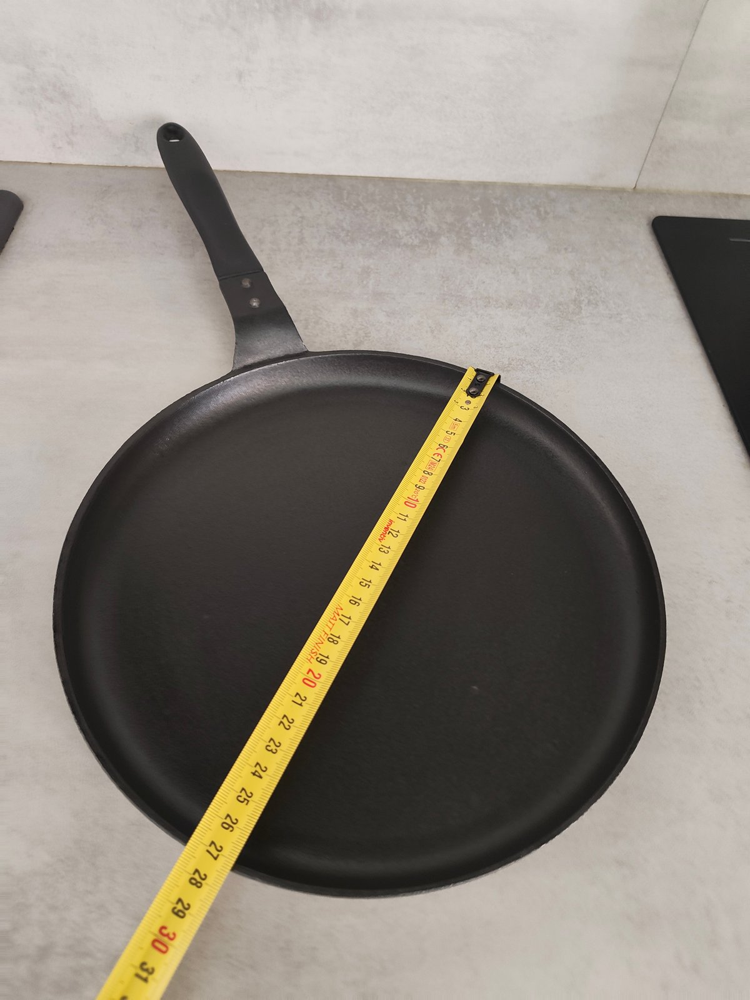
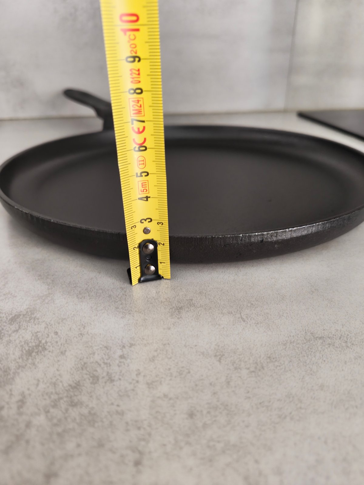
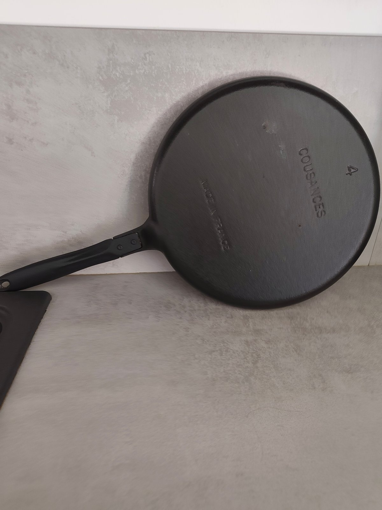
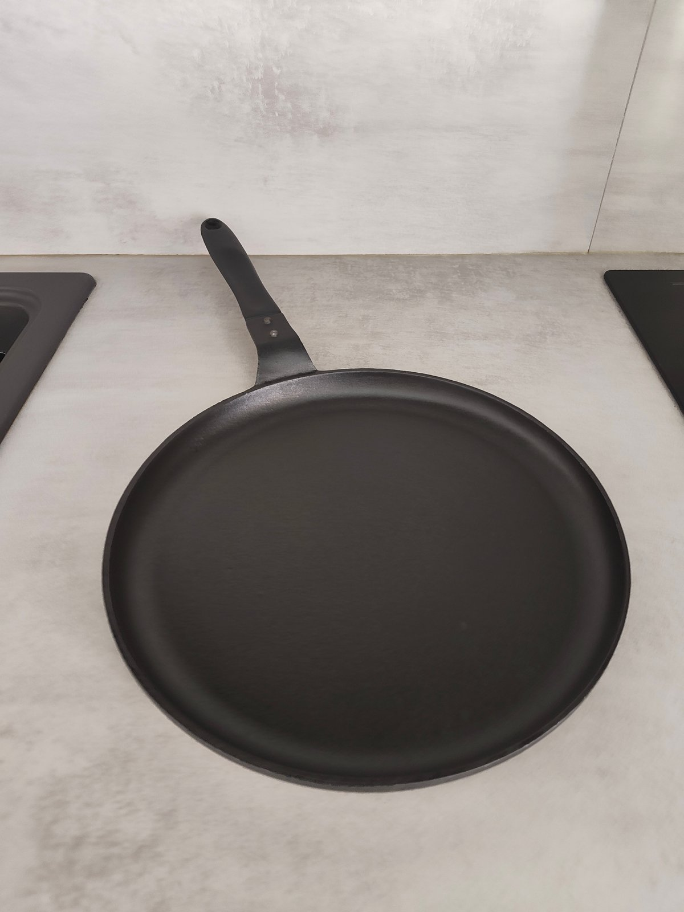
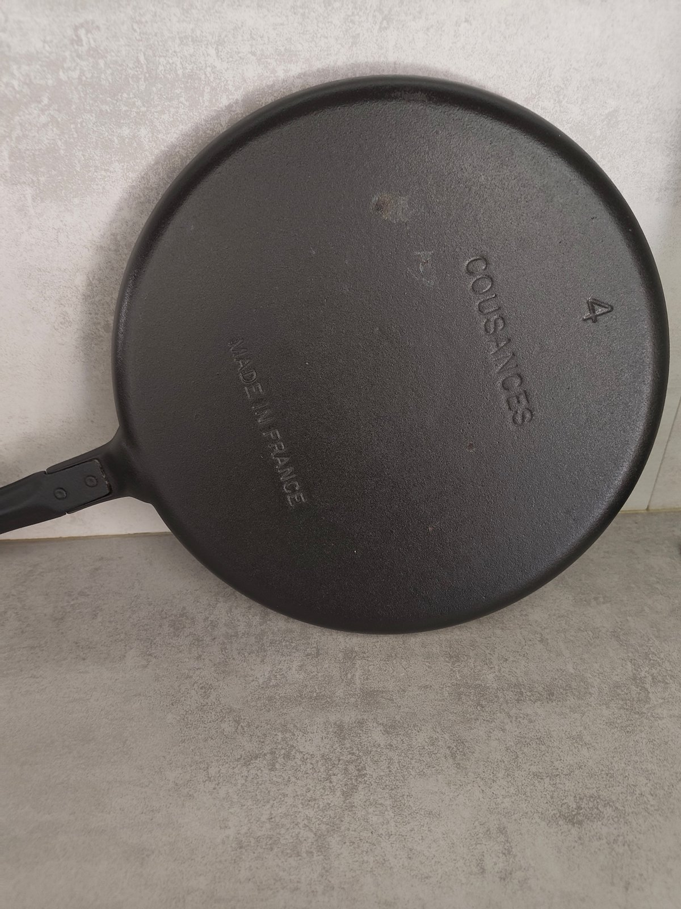
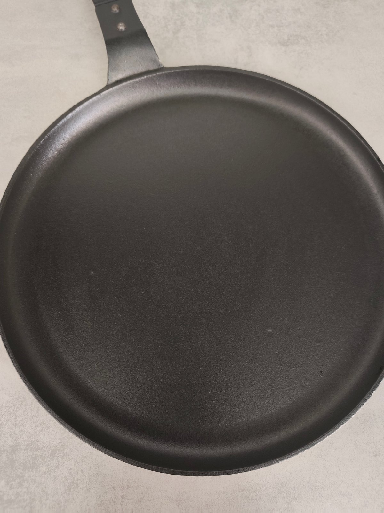
Crêpière vintage Cousances en fonte – Made in France – Groupe Le Creuset
85€
Aucun paiement en ligne : nous vous répondons personnellement pour confirmer la disponibilité, la livraison et le paiement.
Belle crêpière vintage Cousances en fonte, fabriquée en France et issue du groupe historique Le Creuset. Une pièce rare et intemporelle, idéale pour les crêpes, galettes, pancakes ou la cuisine traditionnelle sur toutes sources de chaleur. Ce grand modèle mesure environ 30 cm de diamètre et présente une très belle patine noir mat au look vintage minimaliste. Sa fonte lourde de qualité assure une excellente répartition et rétention de la chaleur pour des résultats de cuisson parfaits. Marquée « Cousances – Made in France » sous la base. Bon état vintage avec des signes d’âge et d’usage normaux pour un ustensile de cuisine vintage. Voir les photos pour les détails. Une magnifique pièce de collection, pratique en cuisine, pour les amateurs de fonte française vintage, de Le Creuset, de Cousances et de cuisine française traditionnelle.
Vous aimerez aussi

Le Creuset – Sauteuse en fonte émaillée avec becs verseurs – Modèle n° 23
70€

Poêle Le Creuset en fonte – Manche en bois (teck) – Fabriquée en France
110€

Poêle Le Creuset en fonte n° 16 – Marron – Fabriquée en France – Petite poêle
50€

Poêle Le Creuset en fonte n° 16 – Orange – Made in France – Petite poêle
50€